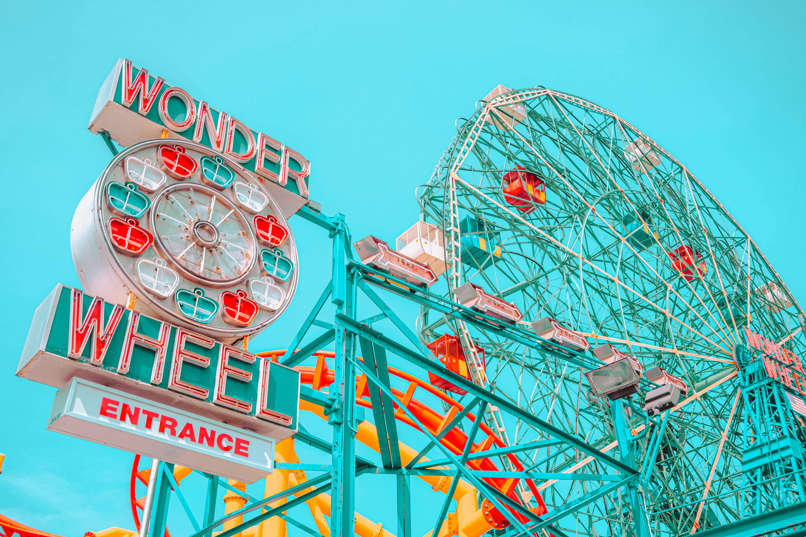

Explore New York City
Wonder Wheel
The Wonder Wheel is a historic Ferris wheel at Deno’s Wonder Wheel Amusement Park in Coney Island, Brooklyn. It is known for its size and moving passenger cars.

A little background
About the landmark
How it began
The Wonder Wheel was designed by the Eccentric Ferris Wheel Company and opened in 1920. Its combination of fixed and sliding cars made the ride different from a standard Ferris wheel.
Today
The wheel remains a Coney Island attraction and a familiar part of the neighborhood’s waterfront amusement district. Seasonal hours can change, so visitors should check the park’s website before going.
Plan your visit
Directions
Boardwalk at West 12th Street, Brooklyn, NY